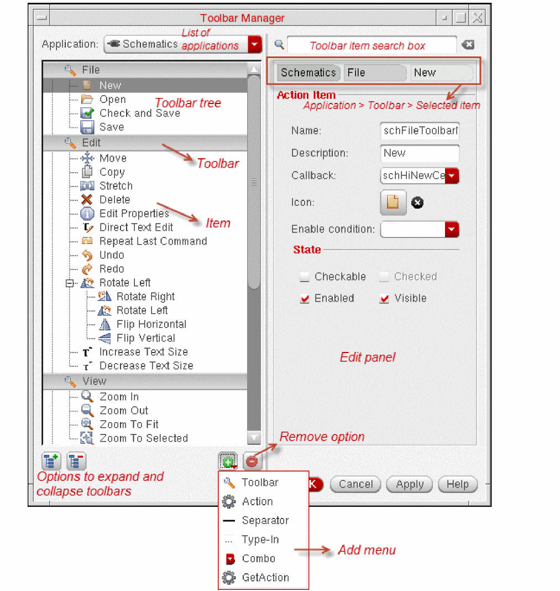
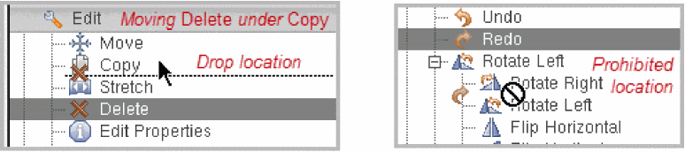

Using and Resetting Toolbars
Toolbar Manager lets you make incremental and local changes to the Virtuoso application toolbars. You can add, edit, or remove toolbars and toolbar items of applications whose toolbars are defined in the Virtuoso Design Editor toolbar files.
Toolbar Manager cannot modify toolbars created programmatically using SKILL APIs, such as hiCreateToolbar.
Toolbar Manager saves your changes in the applicationName.overlay files in the .cadence directory present in your home directory. When you launch an application, the Virtuoso Studio design environment creates toolbars based on the applicationName.toolbars file, overlaid by the applicationName.overlay file. This method ensures the seamless implementation of your changes even after you upgrade the Virtuoso installation.
The .overlay files follow the same filename convention as the .toolbars files. For example, the .toolbars file of Schematic Editor is Schematics.toolbars. The overlay file of this application is Schematics.overlay.
For certain conditions of invalid items in an overlay file, the respective application does not launch and an error message appears in Virtuoso CIW. You must fix the syntax using Toolbar Manager for that application.
To customize toolbars of a supported application using Toolbar Manager:
-
Do one of the following:
- Choose Options – Toolbars from the Virtuoso CIW.
- Choose Window – Toolbars – Customize from within a Virtuoso session window.
-
Right-click the toolbar in the application and select Customize.
 -
Select the application from the Application list. The toolbars of that application appear in the Toolbar tree.
- Toolbar Manager displays the list of applications in their hierarchical order. Sub-applications typically inherit various toolbars from the parent applications. For example, when you add a new toolbar in Schematics, it also becomes available in Schematics XL.
- To search for any data in the toolbars of the selected application, use the Search box. Toolbar Manager filters the list of items based on your search string.
- You can expand or collapse the toolbars using the icons on the bottom-left corner.
- The Toolbar tree displays items with unsaved changes in blue text.
-
Change the application toolbars, as required.
Action Procedure - Right-click the Toolbar tree and click Add or click Add at the bottom of the form to access the Add menu.
- Click Toolbar.
- Specify the toolbar details. For more information, see Using and Resetting Toolbars.
- Select the toolbar in the Toolbar tree.
- Click the Add button to access the Add menu.
-
Select the item type. You can choose from:
- Action: Adds an action item to perform an action.
- Type-in: Adds an item with an input box.
- Combo: Adds an item with a list for selection.
- Separator: Adds a separator for differentiating between items.
-
GetAction: Passes the name of an item to the action retrieval function specified on the item's toolbar. This option allows actions to be reused.By default, the callbacks for type-in (or text) and drop-down list box fields are only triggered if the value has changed. If you want the callback to be triggered when the
EnterorReturnkey is pressed regardless of whether the value in the field has changed, select the Always execute callback when "Enter" key is pressed check box.
- Specify the item details on the Edit panel. For more information, see Toolbar Definition File Format.
-
Select the item on the Toolbar tree, drag it to the new location, and drop the item.
The location where you can drop the item is illustrated by a horizontal line between the items. You cannot drop the item to a location where the line is not visible or the cursor changes to the forbidden cursor. Releasing the mouse button in a prohibited location cancels the drag operation and returns the selection to the original location.

- To save the changes without closing Toolbar Manager, click Apply. To save the changes and exit Toolbar Manager, click OK.
- Restart the application to implement your changes.
The following figure illustrates how you remove the Check and Save item from the toolbar of Schematic Editor.

Reset the Toolbar
You can revert changes by resetting the toolbars on a per-application basis. To do this, you need to click the Reset button on the Toolbar Manager form. Once you click the Reset button, the Reset Toolbars dialog box is displayed.
This dialog lists all the applications in which a toolbar or an item has been added, removed, or edited. Select the application that you need to reset by clicking the check box and click the OK button.
Related Topics
Return to top